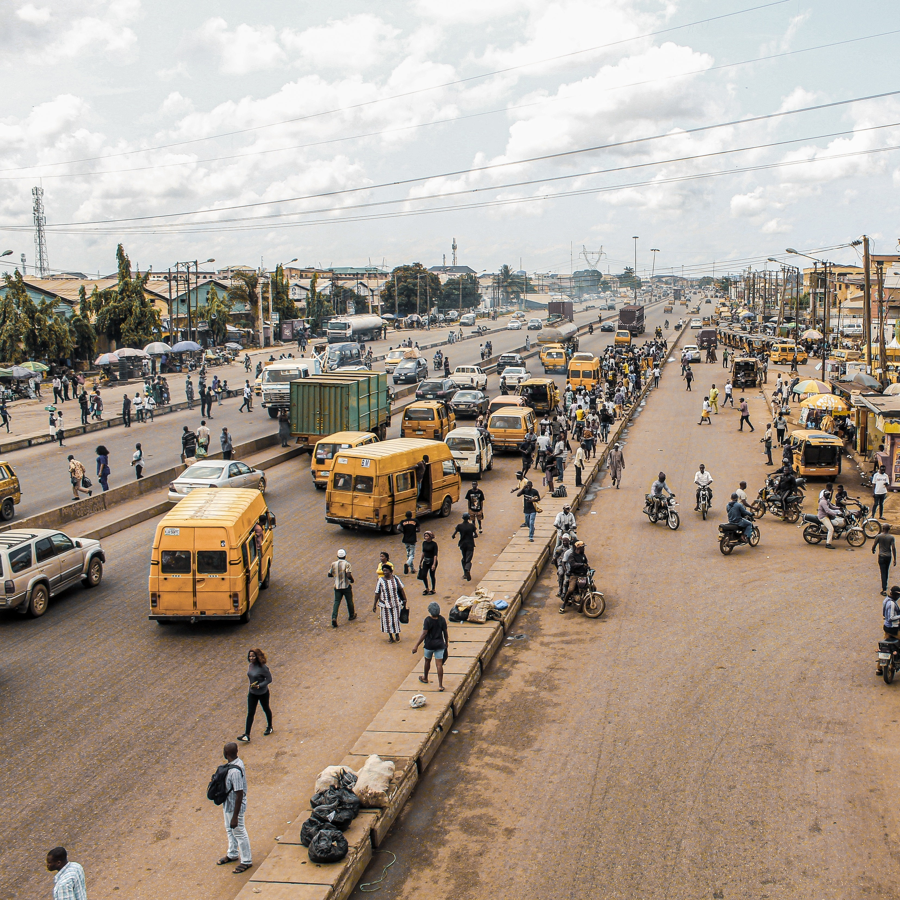
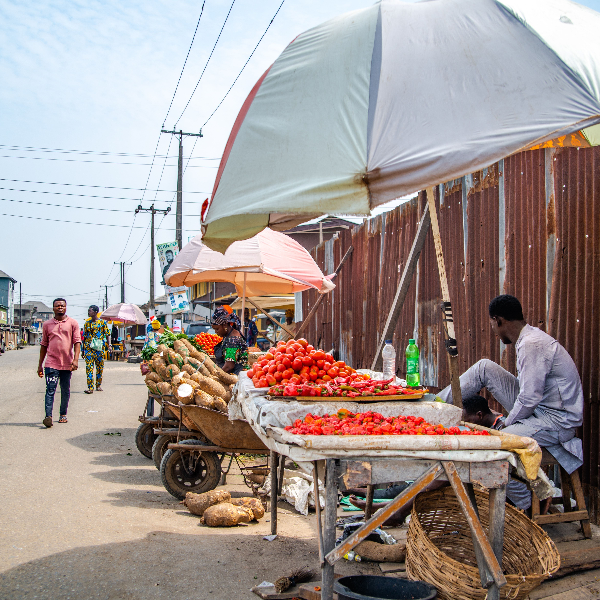

.jpg)
Nigeria
From the Bustling Streets of Lagos to the Ancient Culture of Benin City and the Beauty of Obudu Plateau
My Nigerian adventure began in Lagos, the bustling mega-city that never sleeps. The frenetic energy of Lagos was palpable as I navigated the chaotic markets, where traders from across West Africa converged to buy and sell their wares. The contrast between the modern skyscrapers of Victoria Island and the historic neighborhood of Lagos Island was striking. In Lagos, I immersed myself in the world of Nigerian Afrobeat music. I attended a live performance at the New Afrika Shrine, where the spirit of Fela Kuti, the father of Afrobeat, still reverberates. The rhythm, the electrifying performances, and the political messages embedded in the music provided a profound insight into Nigeria's contemporary culture.
 My journey led me to Benin City, a city steeped in history and once the center of the mighty Benin Empire. The Royal Palace of the Oba of Benin, a UNESCO World Heritage Site, stood as a testament to the empire's grandeur. The intricately carved ivory tusks and bronze plaques spoke of a rich cultural legacy. In Benin City, I had the privilege of witnessing the Igue Festival, a traditional celebration that honors the Oba and the city's ancestors. The vibrant processions, masked dancers, and the colorful regalia of the participants showcased the enduring vitality of Benin's cultural traditions.
Continuing my journey, I arrived in Calabar, a coastal city with a unique blend of history and natural beauty. The serene beauty of Cross River National Park, with its lush rainforests and diverse wildlife, was a stark contrast to the urban bustle. Canopy walks through the forest provided an immersive experience in this pristine ecosystem. In Calabar, I attended the Cross River State Carnival, known as Africa's biggest street party. The vibrant costumes, lively music, and spirited dancers transformed the city into a riot of color and sound, celebrating Nigeria's unity in diversity.
My Nigerian odyssey took me to the tranquil Obudu Plateau, a paradise in the clouds. The cool mountain air and lush landscapes provided a welcome respite from the heat of the lowlands. Hiking along the plateau's scenic trails, I encountered waterfalls, rolling hills, and the unique mountain culture of the local Tiv people. In Obudu, I embarked on a thrilling adventure—a cable car ride that traversed the dramatic terrain. The panoramic views of the plateau below were nothing short of breathtaking, and I marveled at the engineering feat that brought me to this pristine paradise.
 Venturing northward, I explored Kano, a city with a rich history and a strong connection to Nigeria's northern traditions. The ancient city walls, the Great Mosque, and the bustling Kurmi Market told tales of centuries-old heritage. Exploring the city's textile industry, I witnessed the intricate process of hand-dyeing and weaving colorful fabrics. In Kano, I attended a Durbar festival, a grand display of equestrian skills and pageantry. The riders, adorned in traditional attire and turbans, showcased the martial traditions of the region, and the event highlighted the significance of horses in northern Nigerian culture.
As I reflect on my immersive journey through Nigeria, I am deeply moved by the country's rich cultural heritage, stunning landscapes, and the warmth of its people. From the energetic streets of Lagos to the historical marvels of Benin City, from the coastal beauty of Calabar to the highland escape of Obudu Plateau, and the cultural richness of Kano, Nigeria's tapestry of experiences is vast and captivating.
Join me in my future travels as I continue to uncover the hidden treasures of Africa and beyond. Until next time, keep your wanderlust alive and your heart open to the wonders of the world.